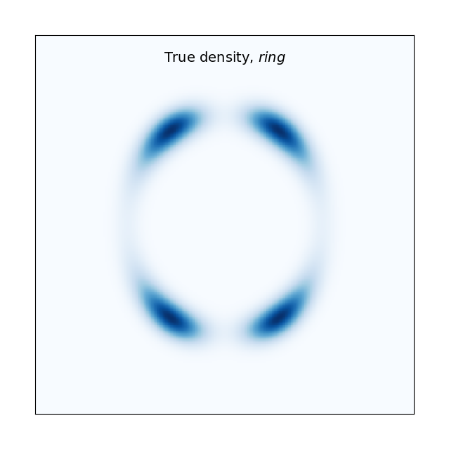
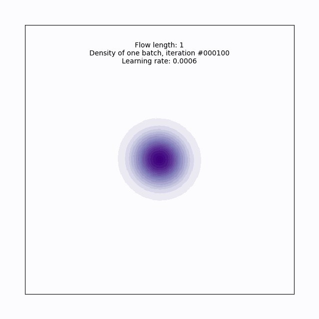
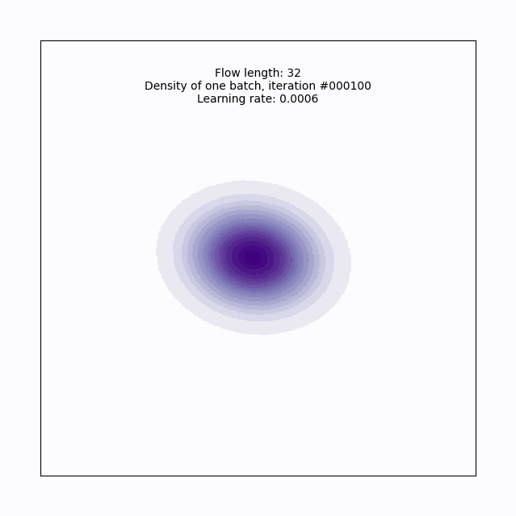
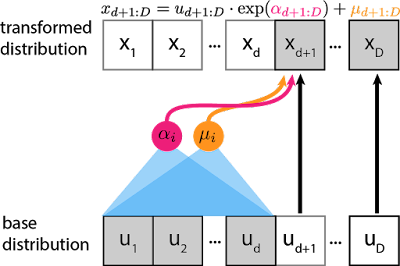

# https://github.com/e-hulten/planar-flows/blob/master/target_distribution.py
def ring_density(z):
exp1 = torch.exp(-0.5 * ((z[:, 0] - 2) / 0.8) ** 2)
exp2 = torch.exp(-0.5 * ((z[:, 0] + 2) / 0.8) ** 2)
u = 0.5 * ((torch.norm(z, 2, dim=1) - 4) / 0.4) ** 2
u = u - torch.log(exp1 + exp2 + 1e-6)
return uThis is section 5 in my series on using Variational Inference to speed up relatively complex Bayesian models like Multilevel Regression and Poststratification without the approximation being of disastrously poor quality.
The general structure for this post and the around it will be to describe a problem with VI, and then describe how that problem can be fixed to some degree. Collectively, all the small improvements in these four posts will go a long way towards more robust variational inference. I’ll also have a grab bag at the end of other interesting ideas from the literature I think are cool, but maybe not as important or interesting to me as the 3 below.
In the last post we saw a variety of different ways importance sampling can be used to improve VI and make it more robust, from defining a tighter bound to optimize in the importance weighted ELBO, to weighting q(x) samples together efficiently to look more like p(x), to combining entirely different variational approximations together to cover different parts of the posterior with multiple importance sampling.
In this post, we’ll tackle the problem of how to define a deeply flexible variational family \mathscr{Q} that can adapt to each problem while still being easy to sample from. To do this, we’ll draw on normalizing flows, a technique for defining a composition of invertible transformations on top of a simple base distribution like a normal distribution. We’ll build our way up to using increasingly complex neural networks to define those transformations, allowing for for truly complex variational families that are problem adaptive, training as we train our variational model.
The rough plan for the series is as follows:
- Introducing the Problem- Why is VI useful, why VI can produce spherical cows
- How far does iteration on classic VI algorithms like mean-field and full-rank get us?
- Problem 1: KL-D prefers exclusive solutions; are there alternatives?
- Problem 2: Not all VI samples are of equal utility; can we weight them cleverly?
- (This post) Problem 3: How can we get deeply flexible variational approximations; are Normalizing Flows the answer?
- Problem 4: How can we know when VI is wrong? Are there useful error bounds?
- Better grounded diagnostics and workflow
A problem adaptive variational family with less tinkering?
Jumping from mean-field or full-rank Gaussians and similar distributions to neural networks feels a little… dramatic1, so I want to spend some time justifying why this is a good idea.
For VI to work well, we need something that’s still simple to sample from, but capable of, in aggregate, representing a posterior that is probably pretty complex. Certainly, some problems are amenable to the simple variational families \mathscr{Q} we’ve tried so far, but it’s worth re-emphasizing that we’re probably trying to represent something complex, and even moderate success at that using a composition of normals should be a little surprising, not the expected outcome.
If we need \mathscr{Q} to be more complex, aren’t there choices between what we’ve seen and a neural network? There’s a whole literature of them- from using mixture distributions as variational distributions to inducing some additional structure into a mean-field type solution if you have some specific knowledge about your target posterior you can use. By and large though, this type of class of solutions has been surpassed by normalizing flows in much of modern use for more complex posteriors.
Why? A first reason is described in the paper that started the normalizing flows for VI literature, Rezende and Mohamed’s Variational Inference with Normalizing Flows : making our base variational distribution more complex adds a variety of different computational costs, which add up quickly. This isn’t the most face-valid argument when I’m claiming a neural network is a good alternative, but it gets more plausible when you think through how poorly it’d scale to keep making your mixture distribution more and more complex as your posteriors get harder to handle. So this is a scalability argument- it might sound extreme to bring in a neural net, but as problems get bigger, scaling matters.
The other point I’d raise is that all these other tools aren’t very black box at all- if we can make things work with a problem-adapted version of mean-field with some structure based on the knowledge of a specific problem we have, that sounds like it gets time consuming fast. If I’m going to have to find a particular, problem-specific solution each time I want to use variational inference, that feels fragile and fiddly as well- that’s a poor user experience.
The novel idea with normalizing flows is that we’ll start with a simple base density like a normal distribution that is easy to sample from, but instead of only optimizing the parameters of that normal distribution, we’ll also use the training on our ELBO or other objective to learn a transformation that reshapes that normal distribution to look like our posterior. By having that transforming component be partially composed of a neural network, we give ourselves access to an incredibly expressive, automatically problem adaptive, and heavily scalable variant of variational inference that is quite widely used.
And if the approximation isn’t expressive enough? Deep Learning researchers have an unfussy, general purpose innovation for that: MORE LAYERS!2

What is a normalizing flow?
A normalizing flow transforms a simple base density into a complex one through a sequence of invertible transformations. By stacking more and more of these invertible transformations (having the density “flow” through them), we can create arbitrarily complex distributions that remain valid probability distributions. Since it isn’t universal in the flows literature, let me be explicit that I’ll consider “forward” to be the direction flowing from the base density to the posterior, and the “backward” or “normalizing” direction as towards the base density.

If we have a random variable x, with distribution q(x), some function f with an inverse f^{-1} = g, g \circ f(x) = x, then the distribution of the result of one iteration of x through, q^\prime(x) is:
q\prime(z) = q(x) \lvert det \frac{\partial f^{-1}}{\partial x^\prime} \rvert = q(x) \lvert \frac{\partial f}{\partial x} \rvert^{-1} I won’t derive this identity3, but it follows from the chain rule and the properties of Jacobians of invertible functions.
The real power comes in here when we see that these transformations stack. If we’ve got a chain of transformations (eg f_K(...(f_2f_1(x)):
x_K = f(x) \circ ... \circ f_2 \circ f_1(x_0)
then the resulting density q_K(x) looks like:
ln q_K (x_K) = lnq_0(x_0) - \sum \limits_{K = 1}\limits^{K} ln \lvert \frac{\partial f_k}{\partial x_{k-1}} \rvert^{-1}
Neat, and surprisingly simple! If the terms above are all easy to calculate, we can very efficiently stack a bunch of these transformations and make an expressive model.
Normalizing Flows for variational inference versus other applications
One source of confusion when I was learning about normalizing flows for variational inference was that variational inference makes up a fairly small proportion of the use cases for normalizing flows, and thus the academic literature and online discussion. More common applications include density estimation, image generation, representation learning, and reinforcement learning. In addition to making specifically applicable discussions harder to find, often resources will make strong claims about properties of a given flow structure, that really only holding in some subset of the above applications4.
By taking a second to explain this crisply and compare different application’s needs, hopefully I can save you some confusion and make engaging with the broader literature easier.
To start, consider the relevant operations we’ve introduced so far:
- computing f, that is pushing a sample through the transformations
- computing g, f’s inverse which undoes the manipulations
- computing the (log) determinant of the Jacobian
1 and 3 definitely need to be efficient for our use case, since we need to be able to sample and push through using the formula above efficiently to calculate an ELBO and train our model. 2 is where things get more subtle: we definitely need f to be invertible, since our formulas above are dependent on a property of Jacobians of invertible functions. But we don’t actually really need to explicitly compute g for variational inference. Even knowing the inverse exists but not having a formula might be fine for us!
Contrast this with density estimation, where the goal would not to sample from the distribution, but instead to estimate the density. In this case, most of the time would be spent going in the opposite direction, so that they can evaluate the log-likliehood of the data, and maximize it to improve the model5. The need for an expressive transformation of densities unite these two cases, but the goal is quite different!
This level of goal disagreement also shows it face in what direction papers choose to call forward: Most papers outside of variational inference applications consider forward to be the opposite of what I do here, the direction towards the base density, the “normalizing” direction.
For our use, hopefully this short digression has clarified which operations we need to be fast versus just exist. If you dive deeper into further work on normalizing flows, hopefully recognizing there are two different ways to point this thing helps you more quickly orient yourself to how other work describe flows.
How to train your neural net
Now, let’s turn to how we actually fit a normalizing flow. Since this would be a bit hard to grok a code presentation if I took advantage of the full flexibility and abstraction that something like vistan provides, before heading into general purpose tools I’ll talk through a bit more explicit implementation of a simpler flow called a planar flow PyTorch for illustration. Rather than reinventing the wheel, I’ll leverage Edvard Hulten’s implementation here.
In this section, I’ll define conceptually how we’re fitting the model, and build out a fun target distribution and loss`- since I expect many people reading this may moderately new to PyTorch, I’ll explain in detail than normal what each operation is doing and why we need it.
Let’s first make a fun target posterior distribution from an image to model. I think it’d be a fun preview gif for the post to watch this be fit from a normal, so let’s use this ring shaped density.

This is a solid starting example in that this’d be quite hard to fit with a normal variational family, but it’s pretty easy to define in PyTorch as well:
Now let’s define our loss for training, which will just be a slight reformulation of our ELBO:
\mathbb{E}[logp(z,x)] - \mathbb{E}[logq(z)]
To do this, we’ll define a class for the loss.
First, we pick a simple base distribution to push through our flow, here a 2-D Normal distribution called base_distr. We’ll also include the interesting target we just made above, distr.
Next, the forward pass structure. The forward method is the is the core of the computational graph structure in PyTorch. It defines operations that are applied to the input tensors to compute the output, and gives PyTorch the needed information for automatic differentiation, which allows smooth calculation and backpropagation of loss through the model to train it. This VariationalLoss module will run at the end of the forward pass to calculate the loss and allow us to pass it back through the graph for training.
Keeping with the structure above of numbering successive stages of the flow, z0 here is our base distribution, and z will be the learned approximation to the target. In addition to the terms you’d expect in the ELBO, we’re also tracking and making use of the sum of the log determinant of the Jacobians to a handle on the distortion of the base density the flows apply.
# https://github.com/e-hulten/planar-flows/blob/master/loss.py
class VariationalLoss(nn.Module):
def __init__(self,distribution):
super().__init__()
self.distr = distribution
self.base_distr = MultivariateNormal(torch.zeros(2), torch.eye(2))
def forward(self, z0: Tensor, z: Tensor, sum_log_det_J: float) -> float:
base_log_prob = self.base_distr.log_prob(z0)
target_density_log_prob = -self.distr(z)
return (base_log_prob - target_density_log_prob - sum_log_det_J).mean()A basic flow
Next, let’s define the structure of the actual flow. To do this, we’ll first describe a single layer of the flow, then we’ll show structure to stack the flow in layers.
Our first flow we look at will be the planar flow from the original Normalizing Flows for variational Inference paper mentioned above. The name comes from how the function defines a (hyper)plane, and compress or expand the density around it:
f(x) = x + u*tanh(w^Tx + b), w, u \in \mathbb{R}^d, b \in \mathbb{R}
w and b define the hyperplane and u specifies the direction and strength of the expansion. I’ll show a visualization of just one layer of that below.
If you’re more used to working with neural nets, you might wonder why we choose the non-linearity tanh here, which generally isn’t as popular as something like relu or it’s variants in more recent years due to it’s more unstable gradient flows. As the authors show in appendix A.1, functions like the above aren’t actually always invertible, and choosing tanh allows them to impose some constraints that make things reliably invertible. See the Appendix for more details about how that works, or take a careful look at Edvard’s implementation of the single function below:
# From https://github.com/e-hulten/planar-flows/blob/master/planar_transform.py
class PlanarTransform(nn.Module):
"""Implementation of the invertible transformation used in planar flow:
f(z) = z + u * h(dot(w.T, z) + b)
See Section 4.1 in https://arxiv.org/pdf/1505.05770.pdf.
"""
def __init__(self, dim: int = 2):
"""Initialise weights and bias.
Args:
dim: Dimensionality of the distribution to be estimated.
"""
super().__init__()
self.w = nn.Parameter(torch.randn(1, dim).normal_(0, 0.1))
self.b = nn.Parameter(torch.randn(1).normal_(0, 0.1))
self.u = nn.Parameter(torch.randn(1, dim).normal_(0, 0.1))
def forward(self, z: Tensor) -> Tensor:
if torch.mm(self.u, self.w.T) < -1:
self.get_u_hat()
return z + self.u * nn.Tanh()(torch.mm(z, self.w.T) + self.b)
def log_det_J(self, z: Tensor) -> Tensor:
if torch.mm(self.u, self.w.T) < -1:
self.get_u_hat()
a = torch.mm(z, self.w.T) + self.b
psi = (1 - nn.Tanh()(a) ** 2) * self.w
abs_det = (1 + torch.mm(self.u, psi.T)).abs()
log_det = torch.log(1e-4 + abs_det)
return log_det
def get_u_hat(self) -> None:
"""Enforce w^T u >= -1. When using h(.) = tanh(.), this is a sufficient condition
for invertibility of the transformation f(z). See Appendix A.1.
"""
wtu = torch.mm(self.u, self.w.T)
m_wtu = -1 + torch.log(1 + torch.exp(wtu))
self.u.data = (
self.u + (m_wtu - wtu) * self.w / torch.norm(self.w, p=2, dim=1) ** 2
)Where things will start to get exciting is multiple layers of the flow; here’s how we can make an abstraction that allows us to stack up K layers of the flow to control the flexibility of our approximation.
class PlanarFlow(nn.Module):
def __init__(self, dim: int = 2, K: int = 6):
"""Make a planar flow by stacking planar transformations in sequence.
Args:
dim: Dimensionality of the distribution to be estimated.
K: Number of transformations in the flow.
"""
super().__init__()
self.layers = [PlanarTransform(dim) for _ in range(K)]
self.model = nn.Sequential(*self.layers)
def forward(self, z: Tensor) -> Tuple[Tensor, float]:
log_det_J = 0
for layer in self.layers:
log_det_J += layer.log_det_J(z)
z = layer(z)
return z, log_det_JLet’s run this for a single layer to introduce the training loop, and build some intuition on the planar flow. Note that I’m hiding setting up the plot code.
#From https://github.com/e-hulten/planar-flows/blob/master/train.py
target_distr = "ring" # U_1, U_2, U_3, U_4, ring
flow_length = 1
dim = 2
num_batches = 20000
batch_size = 128
lr = 6e-4
axlim = xlim = ylim = 7 # 5 for U_1 to U_4, 7 for ring
# ------------------------------------
density = TargetDistribution(target_distr)
model = PlanarFlow(dim, K=flow_length)
bound = VariationalLoss(density)
optimiser = torch.optim.Adam(model.parameters(), lr=lr)
# Train model.
for batch_num in range(1, num_batches + 1):
# Get batch from N(0,I).
batch = torch.zeros(size=(batch_size, 2)).normal_(mean=0, std=1)
# Pass batch through flow.
zk, log_jacobians = model(batch)
# Compute loss under target distribution.
loss = bound(batch, zk, log_jacobians)
optimiser.zero_grad()
loss.backward()
optimiser.step()
if batch_num % 100 == 0:
print(f"(batch_num {batch_num:05d}/{num_batches}) loss: {loss}")
#print(log_jacobians)
if batch_num == 1 or batch_num % 100 == 0:
# Save plots during training. Plots are saved to the 'train_plots' folder.
plot_training(model, flow_length, batch_num, lr, axlim)Here’s a gif of what that looks like over the course of training. With just a single layer of planar flow of course, this isn’t expressive enough to capture the full density, but we can see why this approach has some promise- it’s learning to cover the target density, rather than us having to get creative in specifying a base density that does this.

Let’s try a more serious attempt, with a depth of 32:
#From https://github.com/e-hulten/planar-flows/blob/master/train.py
target_distr = "ring" # U_1, U_2, U_3, U_4, ring
flow_length = 32
dim = 2
num_batches = 20000
batch_size = 128
lr = 6e-4
axlim = xlim = ylim = 7 # 5 for U_1 to U_4, 7 for ring
# ------------------------------------
density = TargetDistribution(target_distr)
model = PlanarFlow(dim, K=flow_length)
bound = VariationalLoss(density)
optimiser = torch.optim.Adam(model.parameters(), lr=lr)
# Train model.
for batch_num in range(1, num_batches + 1):
# Get batch from N(0,I).
batch = torch.zeros(size=(batch_size, 2)).normal_(mean=0, std=1)
# Pass batch through flow.
zk, log_jacobians = model(batch)
# Compute loss under target distribution.
loss = bound(batch, zk, log_jacobians)
optimiser.zero_grad()
loss.backward()
optimiser.step()
if batch_num % 100 == 0:
print(f"(batch_num {batch_num:05d}/{num_batches}) loss: {loss}")
#print(log_jacobians)
if batch_num == 1 or batch_num % 100 == 0:
# Save plots during training. Plots are saved to the 'train_plots' folder.
plot_training(model, flow_length, batch_num, lr, axlim)
Now we’ve got it! With this planar flow, we’ve transformed our base normal into a pretty complex (for 2-D) distribution, cool!
This took about 20 minutes to train, so this is adding some considerable time to our VI workflow, but on the other hand, we’re not spending the human time needed to figure out what weird base density could be fitted to look like this, which is a win. Also worth pointing out here is that we started with a simple example for illustration purposes, so if we did have something much more complicated or high dimensional to fit, we’d start to see the scalability of normalizing flows start to shine more.
Planar flows are a great learning tool, but in reality they aren’t a great choice once we get outside relatively low-dimensional examples. See Kong and Chadhuri, (2020) if you want more mathematical rigor, but intuitively, expansion or compression around a hyperplane doesn’t scale to high dimensions well given the operation is pretty simple. We can get around this partially by making the flow deeper, but that introduces its own problems, namely that very deep flows can struggle to fit given the somewhat artificial constraints imposed in computing the log determinant of the Jacobian (implemented in get_u_hat above) to ensure invertability. Finally, there are just flows developed since the original normalizing flows paper that both are more expressive, and have cheaper to compute transformations and log determinants of the Jacobian- let’s turn to those now.
What more complicated Flows look like
More complex flows are an active area of research, and I won’t attempt to talk through the whole zoo- I’d recommend either Lilian Weng’s blog post, or Kobyzev et al. (2020) as good starting points for seeing the full range of available flows.
Instead, I’ll introduce just a single more complex flow, RealNVP, introduced in Dinh et al. (2017). This is a good example both because the flow is shown to be robustly good for high dimensional variational inference tasks in review papers like Dhaka et al. (2021) and Agrawal et al. (2020), and because it illustrates some generalizable ideas about flow design.
Dinh et al. start the RealNVP paper by noting some goals: they want a Jacobian that is triangular, because this makes computing the determinant incredibly cheap (it’s just the product of the diagonal terms). Second, they want a transformation that’s simple to invert, but complex via inducing interdependencies between different parts of the data.
To do both of these at once, the key insight the authors come to is the idea of a coupling layer, where if the layer is D-dimensional, the first half of the dimensions 1:d remain unchanged, and d+1:D are transformed as complex function of the first half:
\begin{align} y_{1:d} &= x_{1:d}\\ y_{d+1:D} &= x_{1:d} \odot exp(s(x_{1:d})) + t(x_{1:d}) \end{align}
Where s and t are scaling and transformation functions from \mathbb{R}^d \rightarrow \mathbb{R}^{D-d}, and \odot is the Hadamard (element-wise) product. Visually, at each layer:

This has a lot of really appealing properties. First, this has a triangular Jacobian:
\frac{\partial y}{\partial x^T}=\left[\begin{array}{cc}\mathbb{I}_d & 0 \\ \frac{\partial y_{d+1: D}}{\partial x_{1: d}^T} & \operatorname{diag}\left(\exp \left[s\left(x_{1: d}\right)\right]\right)\end{array}\right]
which means that we can really efficiently compute the determinant as \exp \left[\sum_j s\left(x_{1: d}\right)_j\right]. For a sense of scale, with no specific structure to exploit, calculating the determinant is roughly \mathcal{O}(n^3) or a little better6, but for triangular matrices the same operation takes just \mathcal{O}(n); that’s a massive speedup!
Another nice characteristic here is that we don’t need to compute the Jacobian of s or t in computing the determinant of the above Jacobian, so s and t are much easier to make quite complex. Contrast this with the planar flow, where we needed to use a specific (tanh) non-linearity, and impose somewhat arbitrary constraints to ensure invertability at all, let alone easy, fast invertability. With a realNVP flow constructed out of many such coupling layers, it’s easy to throw in a lot of improvements that make training large neural networks much more reliable, like batch normalization, weight normalization, and architectures like residual connections.
As a last appealing property here, realize this can be really expressive: by varying at each layer which dimensions d are held constant and which are transformed, we can build up quite complex interrelationships between different dimensions over the flow. This can be done simply at random, or perhaps even using structure of the problem to decide how to partition the dimensions. For example, Dinh et al. provide an example on image data where a checkerboard pattern is used to structure the partitions. Kingma and Dhariwal take this further with Glow (2018), a flow using 1x1 convolutions. Again, it’s really nice we don’t need the Jacobian of s and t; they can have arbitrarily complex structure and we don’t need pay the computational cost of computing their Jacobians.
It doesn’t add that much intuition to see another flow in code, so I’ll hold off on showing off the implementation of RealNVP for another post or two when I return to fitting our MRP model better using all the tools we’ve built up.
Like I said at the start of this section, there are tons and tons of possible flow structures that get more computationally complex in exchange for expressiveness. RealNVP is a great start though, and for many variational inference problems provides the amount of expressiveness we need. It also illustrates a lot of the core strategy for building further flow structure well:
- Make the log determinant of the Jacobian fast to calculate.
- Impose structure such that calculating the log determinant of the Jacobian isn’t entangled with your source of learnable complexity; this allows expressiveness not fitting restrictions to guide what’s implemented.
- Leverage tools for scalable, stable neural networks, from batch norm to architecture choices like residual connections to GPU compute.
Conclusion
Let’s take stock of how normalizing flows continue our project of extending vanilla variational inference. Normalizing flows allow us to learn the variational family rather than iterating through a bunch of base densities until one works, and can do so for much more complex posteriors than any of the simple choices like a mean-field or full-rank gaussian we’ve seen so far. This is both a gain of functionality (we can now fit posteriors with VI that we absolutely couldn’t before), and a gain of convenience (the workflow for “make my neural network expressive” is much, much more convenient than the one where the analyst tries to find or make increasingly weird distributions themselves).
Of course, this adds compute time, and a requirement to start understanding neural network implementation choices well. This isn’t a free lunch- even the simple planar flow on a toy example above took about 20 minutes to fit on my laptop, and having to understand neural nets well to fit a Bayesian model feels kind of silly. Still though, in the telling of review papers like Dhaka et al. (2021) and Agrawal et al. (2020), a basic RealNVP flow is a serious improvement for many complex posterior distributions at fairly palatable run times. This is a pretty good tradeoff for many realistic models, and it’s for that reason that normalizing flows are an increasingly popular part of the variational inference toolbox.
Like with alternative optimization objectives or the various uses of (Pareto smoothed) importance sampling from the last post, normalizing flows give us tools to fit a wider range of models with variational inference, and do so more robustly and conveniently. This can come with it’s own problems, but these trades are often worth it. In the next post, we’ll add a final set of tools to our VI toolbox: robust diagnostics to know if our approximation is good or not.
Thanks for reading. The code for this post can be found here.
Footnotes
It also almost has a bit of “no brain no pain” ML guy energy, in the sense that we’re really pulling out the biggest algorithm possible. It really is a funny trajectory to me to go from “I’d like to still be Bayesian, but avoid MCMC because it’s slow” to “screw subtle design, let’s throw a NN at it”.↩︎
This is mostly a joke, but it really is a tremendous convenience that there’s such a straight forward knob to turn for “expressivity” in this context. We’ll get into the ways that isn’t completely true soon, but NNs provide fantastic convenience in terms of workflow for improving model flexibility.↩︎
You can see it in the original Normalizing Flows paper linked above, or combined with a nice matrix calc review by Lilian Weng. As a more general note, since this is a common topic on a few different talented people’s blogs, I’ll try to focus on covering material I think I can provide more intuition for, or that are most relevant for variational inference.↩︎
A great example of this is Lilian Weng’s NF walkthrough which I reccomended above- It has a fantastic review of the needed linear algebra and covers a lot of different flow types, but is a bit overly general about what properties are most desirable in a flow, and therefore initially a bit fuzzy on the value different flows have.↩︎
Deriving precisely how this works would take us too far afield, but see Kobyzev et al. (2020) if you’re interested. It’s a great review paper that does a lot of work to recognize there are multiple different possible applications of normalizing flows, and thus different notations and framings that they very successfully bridge.↩︎
Ok fine, you probably get that down to \mathcal{O}(n^{2.8...}) using Strassen which is implemented essentially everywhere that matters.↩︎
Reuse
Citation
BibTeX citation:
@online{timm2023,
author = {Andy Timm},
title = {Variational {Inference} for {MRP} with {Reliable} {Posterior}
{Distributions}},
date = {2023-05-27},
url = {https://andytimm.github.io/variational_mrp_pt5.html},
langid = {en}
}
For attribution, please cite this work as:
Andy Timm. 2023. “Variational Inference for MRP with Reliable
Posterior Distributions.” May 27, 2023. https://andytimm.github.io/variational_mrp_pt5.html.